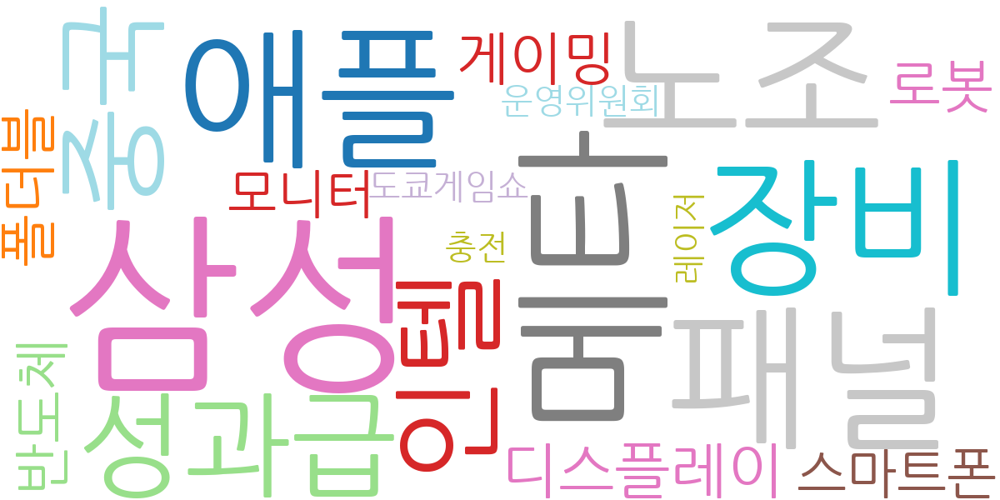
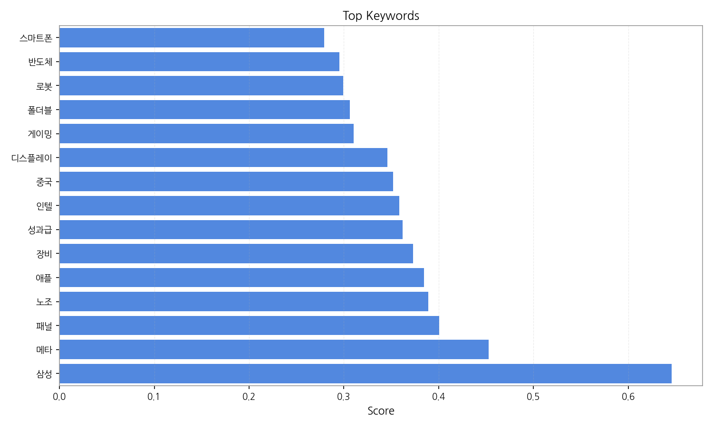
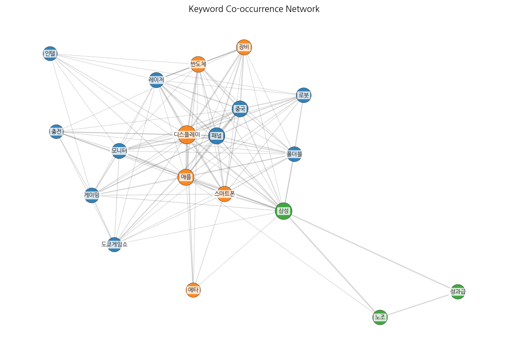
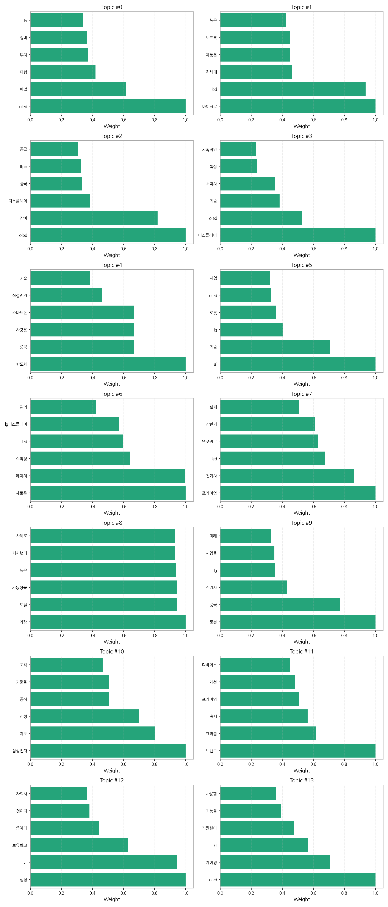
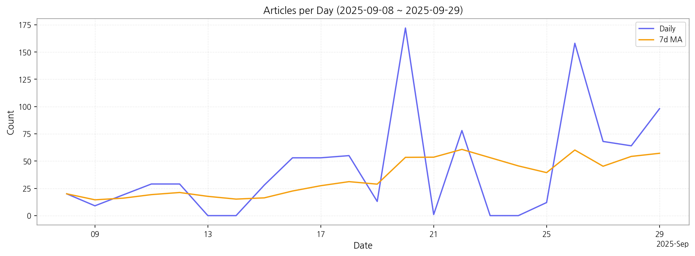

1. 핵심 맥락:
2. 최근 변화/스파이크:
3. 실무 인사이트:

| Rank | Keyword | Score |
|---|---|---|
| 1 | 삼성 | 0.646 |
| 2 | 메타 | 0.453 |
| 3 | 패널 | 0.401 |
| 4 | 노조 | 0.389 |
| 5 | 애플 | 0.384 |
| 6 | 장비 | 0.373 |
| 7 | 성과급 | 0.362 |
| 8 | 인텔 | 0.359 |
| 9 | 중국 | 0.352 |
| 10 | 디스플레이 | 0.346 |
| 11 | 게이밍 | 0.310 |
| 12 | 폴더블 | 0.307 |
| 13 | 로봇 | 0.299 |
| 14 | 반도체 | 0.295 |
| 15 | 스마트폰 | 0.279 |




1. 핵심 맥락:
2. 최근 변화/스파이크:
3. 실무 인사이트:
| Idea | Target | Value Prop | Score |
|---|---|---|---|
| 메타버스 협업용 초고해상도 마이크로 OLED XR 글래스 | 북미 빅테크 기업, 엔터프라이즈 솔루션 제공 기업 | 초고해상도 마이크로 OLED 디스플레이 기반 몰입형 XR 경험 제공, 경량 디자인, 향상된 편의성, 실시간 협업 기능 강화 | 4.50 |
| AI 기반 디스플레이 공정 자동화 및 수율 예측 솔루션 | 디스플레이 제조사, 반도체 제조사 | AI 기반 실시간 공정 모니터링 및 제어, 불량 예측 및 원인 분석, 수율 향상, 생산 비용 절감, 스마트 팩토리 구축 지원 | 4.30 |
| AI 기반 차량용 AR HUD 개인 맞춤형 솔루션 | 글로벌 완성차 OEM, 프리미엄 차량 옵션 시장 | AI 기반 실시간 운전자 맞춤형 AR 정보 제공, 안전 운전 지원, 차별화된 사용자 경험 제공 (시선 추적, 제스처 인식, 위험 예측) | 4.20 |
| 퀀텀닷 기반 고색재현율, 저블루라이트 IT용 MicroLED 패널 | IT 기기 제조사, 게이밍 모니터 제조사, 디자인 전문가 그룹 | 퀀텀닷 기술 기반 넓은 색 영역, MicroLED의 높은 밝기 및 명암비, 저블루라이트 기술, 눈 건강 보호, 생생한 화질 | 4.00 |
| 폴더블 IT 기기용 UTG 기반 초저전력 OLED 패널 | 글로벌 스마트폰 제조사, IT 기기 OEM | 강화된 UTG 내구성, 주름 최소화, 초저전력 OLED 기술, 얇고 가벼운 디자인, 향상된 휴대성 | 3.80 |